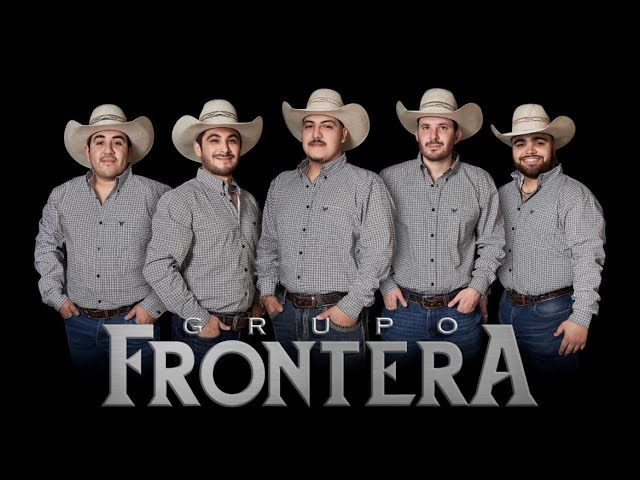
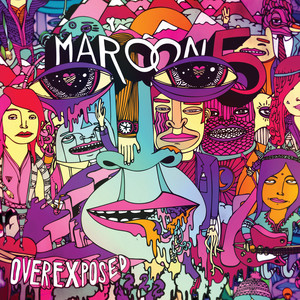

Artistas y Grupos que me gustan:
- Grupo Frontera: Grupo de música norteño que fusiona estilos tradicionales y contemporáneos. 
- Matisse: Grupo mexicano de pop que ha ganado popularidad en los últimos años.
- Maroon 5: Grupo estadounidense de pop rock conocido por sus éxitos en la década de 2010. 
- Bruno Mars: Cantante y compositor estadounidense conocido por su estilo versátil.
- Ricardo Montaner: Cantante y compositor venezolano conocido por sus baladas románticas.
- Sebastian Yatra: Cantante colombiano de pop latino conocido por sus baladas románticas.
Me gusta mucho su estilo, y estuve desde su comienzo.
Me gusta su música, son calmadas y emotivas.
Me gustan varias de sus canciones, tienen un estilo pegajoso.

Siempre me ponen de buen humor.
Me gustan sus baladas, Cada ves que lo escucho pienso que es Sábado.
Buenas baladas, reggaeton aceptable.